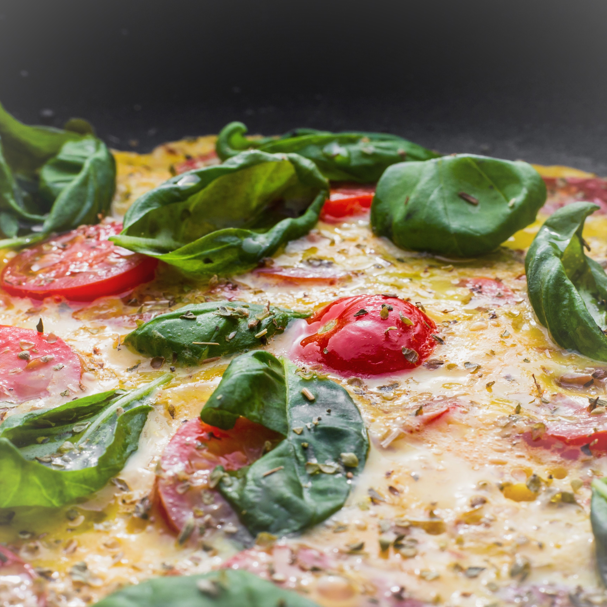
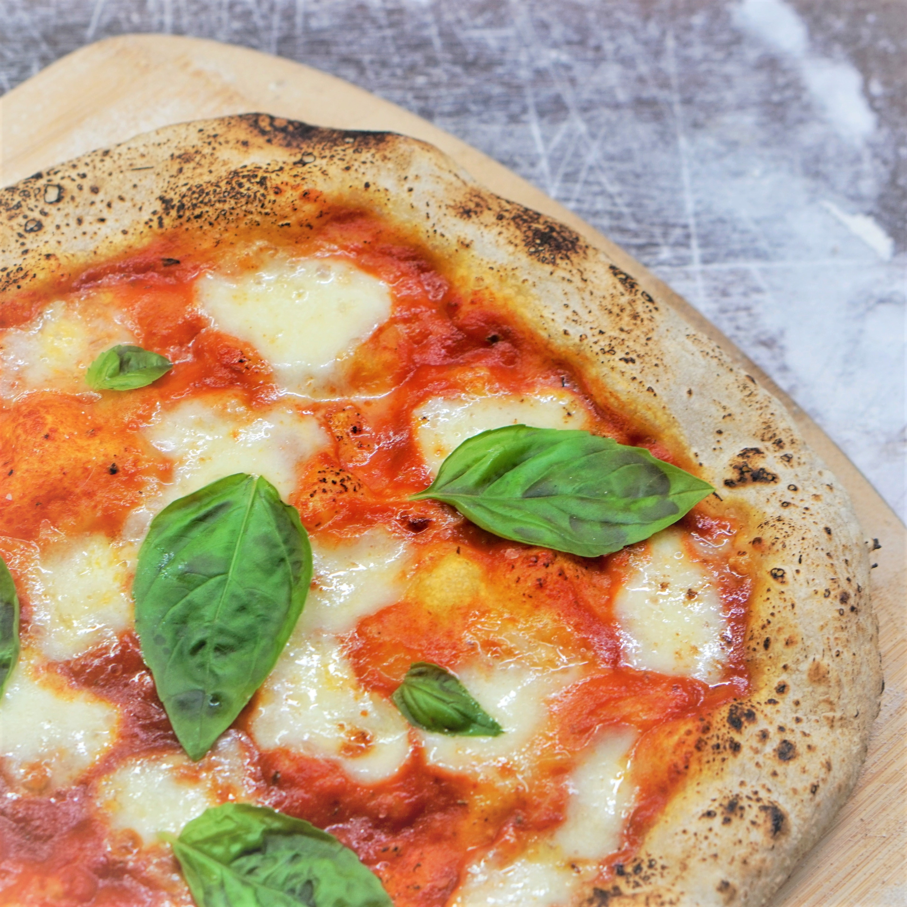

こだわり
Soleilではイタリアや日本の厳選した食材を使用し、安心してお召し上がりいただける料理を心がけています。
また、お客様にリーズナブルな価格で本場のイタリアンを提供することをモットーに
しております。
是非皆さまに召し上がって頂き、居心地の良い空間と、おくつろぎのひと時を提供していきたいと
思っております。

イチオシメニュー
当店のイチオシは、選りすぐりの食材だけを使用して高温500度以上の窯でじっくりと焼き上げた
特製マルゲリータピザです。
トッピングにはポモドリーニを使った自家製トマトソースと
水牛モッツァレラチーズを使用しております。
一口食べるとチーズの濃厚な旨味と抜けるような
トマトの風味にやみつきになること間違いなし！！